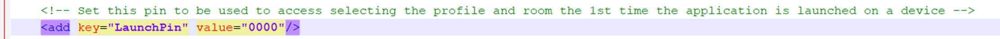

Install
WARNING: The EMS Room Sign App was formerly named EMS Glance. Some of the installation files (e.g., API, dll, etc.) will temporarily retain the Glance name.
This topic will provide information that will allow you to do the following:
To install or upgrade the EMS Room Sign App, you will:
Install or Upgrade the Database Component
- Obtain the EMSRoomSignApp.sql file.
- Open Microsoft SQL Server Management Studio.
- Within Microsoft SQL Server Management Studio, select File > Open > File… and locate EMSRoomSignApp.sql.
- Select your EMS database and execute the query (Query > Execute). When query execution has completed, the message "Command(s) completed successfully" will appear in the Results section.
Install or Upgrade the EMS Room Sign App DLL
- On each client machine that needs access to the EMS Room Sign App Settings area, paste a copy of the EMS.Glance.dll file into the folder that contains your EMS application files (typically C:\Program Files\EMS).
- Once the EMS.Glance.dll is placed in the correct folder on the client machine (assuming your organization is appropriately licensed for the EMS Room Sign App), the EMS user will see the EMS Glance Settings button on the tool bar within the EMS application.
NOTE: To update your registration, go to System Administration > Settings > Registration in EMS Desktop Client.
Install or Upgrade the EMS Room Sign App API
- Manually uninstall any previous versions of the EMS Room Sign App API on your web server.
- Download the EMSGlanceAPI.msi file onto the web server that will be running the EMS Room Sign App API.
- Run EMSGlanceAPI.msi.
- The first screen welcomes you to the EMS Room Sign App API Web Service Setup Wizard. Click Next to begin the installation process. The Destination Folder screen will appear.

- Select the destination folder. The installation process will create a new physical directory on your web server based on the destination folder path entered (“EMSRoomSignApp” in the example above.) Click Next.
NOTE: The EMS Room Sign App API should not be installed in the same physical directory as other EMS web-based products OR under a site running another version of the EMS Room Sign App API.
- The EMS SQL Server Database Settings information screen will appear.

- Enter your EMS SQL Server name.
- Enter your EMS Database name:
- EMS Professional customers (typically named “EMSData”).
- EMS Workplace, EMS Campus, EMS Enterprise, EMS District and EMS Legal customers (typically named “EMS”).
- Click Next.
- The Virtual Directory information screen will appear.

- The Virtual Directory Name will default to the destination folder specified above. It is recommended that you keep the default setting. The installation process will create a virtual directory on your web server based on the virtual directory entered (“EMSRoomSignApp” in the example above.) Click Next.
NOTE: The EMS Room Sign App API should not be installed in the same virtual directory as other EMS web-based products OR under a site running another version of the EMS Room Sign App API.
- The Ready to install EMS Room Sign App API Web Service screen will appear. Click Install to install the EMS Room Sign API.
- The Completed the EMS Room Sign App API Web Service Setup Wizard screen will appear. Click Finish.
Verify the EMS Room Sign App API Installation
After following the steps above, verify your EMS Room Sign App API installation by opening a browser and entering the EMS Room Sign App API URL:
Example: http://[ServerName]/EMSGlanceAPI/service.asmx
(replace [ServerName] with the name of your web server)
NOTE: This URL will be required for the EMS Room Sign App Web Application installation.
Install or Upgrade the EMS Room Sign Web Application
- Download the EMSGlance.msi file onto the web server that will be running the EMS Room Sign App web application.
- Run EMSGlance.msi.
- The first screen welcomes you to the EMS Room Sign App Setup Wizard. Click Next to begin the installation process. The Destination Folder screen will appear.
- Select the destination folder. The installation process will create a new physical directory on your web server based on the destination folder path entered (“EMSRoomSignApp” in the example above.) Click Next.
NOTE: The EMS Room Sign App should not be installed in the same physical directory as other EMS web-based products OR under a site running another version of EMS Room Sign App.
- The EMS Room Sign App API Path screen will appear.
- Enter the URL of your EMS Room Sign App API Web Service.
Example: http://[ServerName]/EMSGlanceAPI/service.asmx
(replace [ServerName] with the name of your web server)
- Click Next.
- The Virtual Directory information screen will appear.
- The Virtual Directory Name will default to the destination folder specified in Step 4. It is recommended that you keep the default setting. The installation process will create a virtual directory on your web server based on the virtual directory entered (“EMSRoomSignApp” in the example above.) Click Next.
NOTE: The EMS Room Sign App should not be installed in the same virtual directory as other EMS web-based products OR under a site running another version of the EMS Room Sign App.
- The Ready to install EMS Room Sign App screen will appear. Click the Install button to install the EMS Room Sign App.
- The Completed the EMS Room Sign App Setup Wizard screen will appear. Click Finish.
Create an EMS Admin User to Manage Your EMS Room Sign App API Web Service
- Create the EMS Admin Account to be used for the EMS Room Sign App:
- Create a user account in EMS Desktop Client under System Administration > Security > Users (with any user name and password you choose).
- Uncheck the Administrator box.
- Then add the process EMS API Web Service Access to this account.
- Enter the user name and password for the account in the web.config file of the EMS Room Sign App settings, for example:
<appSettings>
<add key="webpages:Version" value="2.0.0.0"/>
<add key="webpages:Enabled" value="false"/>
<add key="PreserveLoginUrl" value="true"/>
<add key="ClientValidationEnabled" value="true"/>
<add key="UnobtrusiveJavaScriptEnabled" value="true"/>
<add key="ClientValidationEnabled" value="true"/>
<add key="EMSGlanceAPIURL" value=""/>
<add key="EmsUser" value="admin"/>
<add key="EmsPassword" value="admin"/>
TIP FOR EMS CLOUD CUSTOMERS: Modifications to the web.config file must be performed by EMS Cloud Operations. To request these changes, please contact EMS Support.
Set a Launch Pin
- Open a browser and enter the URL to your EMS Room Sign App web application.
- If this is your first time accessing the site, select a profile and room. Each individual profile can be protected with a passcode; however, the first landing page does not have a passcode set by default.
- Modify the web.config file to set a Launch Pin. Setting this value (which is blank by default), will force users to enter a code the first time they browse to the EMS Room Sign site.
- Navigate to the Room Sign App web directory.
- Edit the web.config file.
- Enter a value for the Launch Pin key.
Example Screenshot With a 0000 Pin

Access EMS Room Sign App on Your Device(s)
The EMS Room Sign App is ready to use once all of the Room Sign components have been properly installed and at least one Profile has been configured for use (see Configure the EMS Room Sign App). To access the EMS Room Sign App on your device, do the following:
- On your device, open a browser and enter the URL to your EMS Room Sign App web application:
Example: http://[ServerName]/EMSGlance
(replace [ServerName] with the name of your web server)
- The first time you access the EMS Room Sign App on your device, the Settings screen will appear.

- Select the Profile in the Profile dropdown.
- Select the Room in the Room dropdown.
- Click Apply.
NOTE: Once the EMS Room Sign App is running, to re-access the Settings screen for any reason, simply double-tap the EMS Room Sign App logo in the upper-left hand corner of the screen.